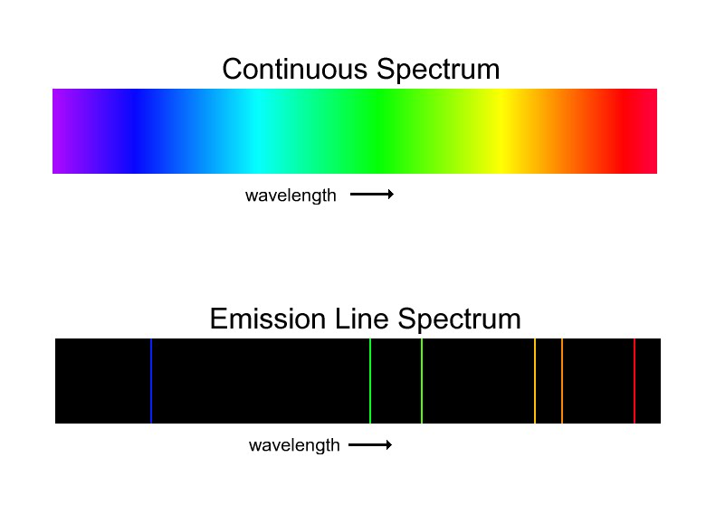

Projects
Report 1 : Gamma Ray Spectrocopy with Beta Particles in Magnetic Fields
Click the photo to look at the report

Description:
This report dissects Gamma rays and it’s related spectrum’s for various sources and how the intensity is affected by different materials. A look into the properties of Beta Particles in Magnetic Fields allow the decay curves of various sources to be produced. In an extension radiation of a certain food is tested
Skills used:
Mathematical modelling, Nuclear Physics and use of Data Analysis
Report 2 : Photometry of the variable star XX Cygni
Click the photo to look at the report

Description:
Using image calibration and Photometry, the distance between Earth and the Cepheid variable star XX-Cygni is found. With the aid of astronomical cameras and coding techniques,graphs and plots will be used to ultimately create a light curve that will give vital information about the stars radius, luminosity and even age.
Skills used:
Mathematical modelling, AstroPhysics and coding models
Report 3 : Atomic Spectroscopy with the Duane Hunt Law
Click the photo to look at the report
Description:
Using Atomic Spectrocopy an unkown gas is identified. Using this knowledge the Rydberg Constant is derived. In the second part of the experiment usig crystal diffraction Plancks Constant is determined using mathematical techniques
Skills used:
Mathematical modelling, Practical accuracy, data analysis and quantum mechanics